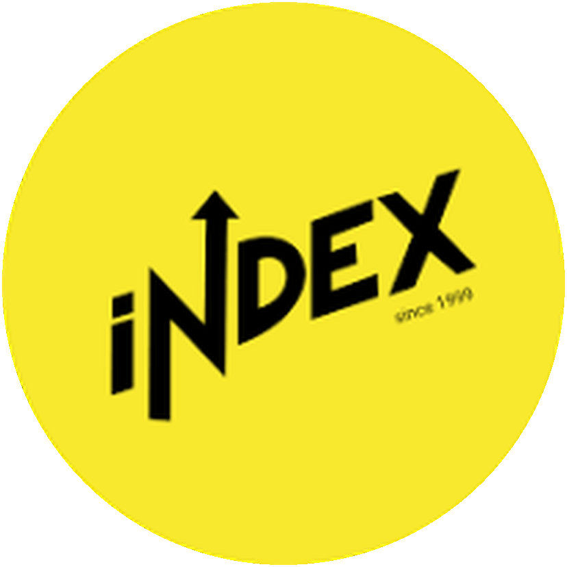

Współpraca z Funduszem Index
Jesteśmy studentami Uniwersytetu Ekonomicznego w Krakowie. Wyceniamy spółki, prowadzimy portfel wirtualny i publikujemy każdą decyzję. Szukamy partnerów, którzy chcą uczyć nas praktyki rynku.
4spółki w portfelu, każda z raportem i wyceną DCF
26członków funduszu, w tym 13 analityków podpisanych pod raportami
ok. 185członków Koła Naukowego Rynku Kapitałowego INDEX
Oferta dla partnerów · listopad 2026fundusz.knrkindex.pl
Oferta dla partnerów

Za nami stoi koło INDEX
Fundusz to 26 wybranych członków KNRK INDEX, jednej z najbardziej aktywnych organizacji studenckich na UEK. Partner funduszu dociera do całej tej społeczności.
ok. 185członków koła w roku 2026/2027
25+lat działalności funduszu w strukturach koła
11projektów: konferencje, konkursy, czasopismo, warsztaty
ok. 3 000uczestników gry giełdowej INDEX Investment Challenge
Projekty koła
Capital Market Days: jedna z największych studenckich konferencji o rynku kapitałowym w Polsce. Consulting Academy: całodniowe warsztaty z ekspertami; ostatnia kampania zebrała 1,28 mln wyświetleń i 212 zgłoszeń. Profit Journal: czasopismo finansowe docierające do ponad 1 000 studentów. Startup Stage: ponad 200 uczestników na każdej edycji.
Absolwenci i obecność
Absolwenci koła pracują m.in. w bankach inwestycyjnych w Londynie, funduszach private equity i venture capital, firmach Wielkiej Czwórki i doradztwie strategicznym. Jesteśmy obecni na Open Eyes Economy Summit 2026 w Krakowie. Rozmawiamy też o udziale w SMIF|UK, konferencji studenckich funduszy w Wielkiej Brytanii.
Jak zacząć
Napisz do nasWystarczy krótka wiadomość. Odpowiadamy w ciągu kilku dni roboczych.
Porozmawiajmy30 minut online lub w Krakowie. Poznajemy Wasze cele i mówimy, co możemy dać.
Ustalmy pierwszy krokZwykle to jedno spotkanie lub warsztat. Resztę planujemy po nim.
Fundusz Index to edukacyjny projekt studentów prowadzony przez Fundację Index (KRS 0001137760). Nie jest funduszem inwestycyjnym w rozumieniu ustawy z 27 maja 2004 r. o funduszach inwestycyjnych, nie zbiera pieniędzy na inwestycje i nie prowadzi działalności maklerskiej. Portfel jest wirtualny. Liczby dotyczące koła i jego projektów pochodzą z materiałów KNRK INDEX. Stan na listopad 2026 r.